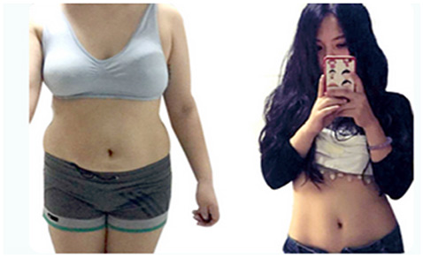
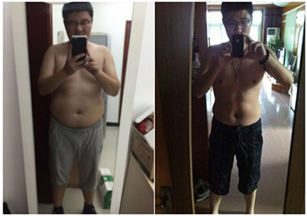
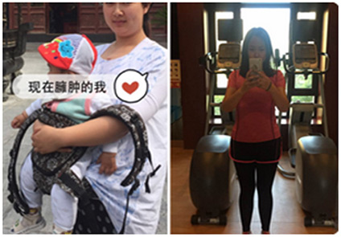
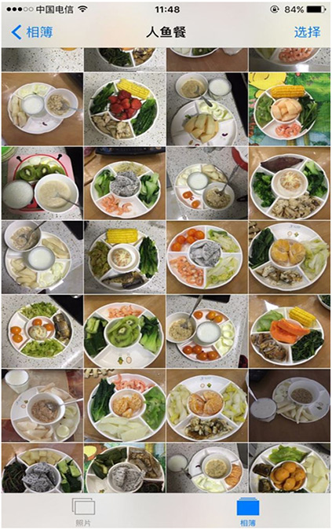
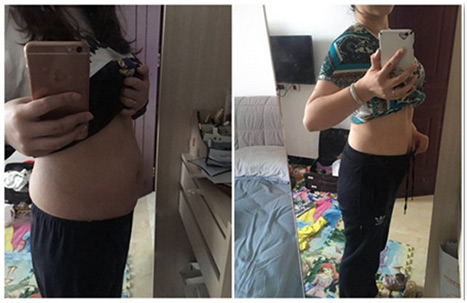
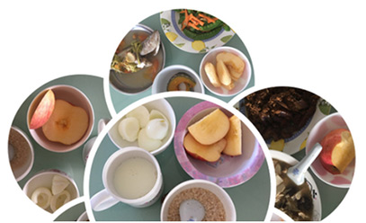
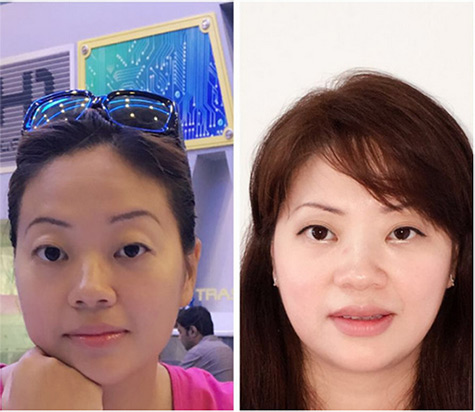

我是俄罗斯瘦身达人Tanya Rybakova，从事减肥行业十年；
帮助几十万肥胖者减肥成功，全球粉丝近百万。
Tanya大学时胖到了210斤，三年狂减掉100斤。
现在她的减肥秘诀整理出来分享给大家，
肯定对大家有帮助。
添加明星蜜蜜微信号
renyuxianmimi16
立即免费领取《瘦身达人狂瘦100斤秘籍》
有人按我的方法减了50斤
Tanya大学时胖到210斤！210斤！210斤！
下面来自人鱼线官网的减肥达人秀：
http://www.renyuxian.com/renyuxian/articlelist
看后肯定有收获！
明星
湖南卫视知名综艺主持人
28岁 183cm
曾经的海涛，应该算是最重量级的主持人了。不过近200斤的体重却让他在《真正男子汉》挑战节目中感受到了痛苦。如今海涛已经成功瘦身20斤。42天，杜海涛明星粉丝班，与粉丝会员一起吃人鱼餐、六周相互监督训练、互动分享、培养健康的人与睡眠习惯，一起瘦身，一起朝人鱼线前进。
忙人
上海奔腾集团董事长
47岁 179cm
平时比较忙，健身卡办了不下3张，都是去了一两次就没去过了。看到朋友圈里李瑜晒她忙中瘦身的成果，就加入了她的班级。6周下来瘦了17.4斤，挺满意的。接下来目标是瘦到75kg左右。
懒人
电商事业部总监
35岁 175cm
一来工作比较忙 二来平时懒得运动，身材比较臃肿，尤其是肚子。朋友推荐人鱼线说比较适合我，就尝试下看。效果还是蛮好的，42天瘦了近20斤，大肚子明显不见了。
产后妈妈
28岁 167cm
在美国生完宝宝以为就能回到以前的身材，没想到一直维持在125斤。国内的闺蜜介绍我参加人鱼线，几周课程还真回到了怀孕前的身材，而且也没有影响照顾宝宝
添加明星蜜蜜微信号
renyuxianmimi16
立即免费领取《瘦身达人狂瘦100斤秘籍》
有人按我的方法减了50斤
【明星学员】减重32斤
路人误认我和孩子是姐妹
【人鱼线瘦身达人】曾经我也是一个瘦子，胖了以后以前的衣服全穿不上了。为了减肥我就开始节食，也有一些效果，但最受不了的就是吃不饱，最痛苦的还是饿的头昏眼花，好容易瘦几斤，反弹还特别快，所有的罪都白遭了！
参加人鱼线的课程后，才知道班级里由教练、营养师、心理导师共同组成专家组，特别是还有国际健身明星&韩国总统私教郑雅玲为我们指导健身减肥，营养师在班级里细心地讲解了饮食的注意事项 ，我也严格按照人鱼餐来吃，按照要求来运动。一段时间坚持下来以后，体重和形体都有了改善。最令我惊喜的是，以前我连跑800米都坚持不下来，现在5公里轻轻松松地就可以完成。
连载！人鱼线首例直播减肥！
【减肥成功案例】已经减重了40斤的他，他的感慨：现今社会肥胖人群越来越多，但是在选择 减肥 的时候又无从下手！减肥也是一个永无休止的话题”人鱼线不一样的减肥方
【7月明星学员】人鱼线助力化身最美新娘！
33岁 160cm
奥康鞋业销售部经理
【减肥达人分享】人鱼线减肥和之前的减肥方法都不一样，人鱼线里面是有很多老师的，好吧，其实是营养师、健身教练和心理咨询师。营养师菲菲告诉了我很多食物的热量和营养，还给我量身订制了不少健康食谱。
最让人开心的是，人鱼线提供的食谱完全可以吃饱，而且做出来味道也超棒的，菲菲么么哒！
一个陪你一辈子的减肥法
说起人鱼线与其它减肥方法的不同，史楠说道： 减肥就像恋爱，有的人能糊弄你一辈子，而有的人只能糊弄你一阵子。一些不适合自己的减肥方法，就是只能糊弄一阵子了。如果人鱼线适合你，那就可以让你主宰自己的体重。
女儿和我都变成了瘦瘦的小公主
【人鱼线瘦身达人】体重42减下来了。对于减肥来说，步行、跑步、椭圆机等有氧运动加上小重量多次数的力量训练，对我再合适不过，我的身高来说，最完美的体重应该是60KG。所以也还在继续减肥的路上继续加油，也希望我的经历能给小伙伴们带来一点动力，让我们在减肥的路上相互加油相互努力，努力变成我们最想蒋欣从81kg到73kg花的时间并不久。她刚进人鱼班时，有点儿饿。因为其中饮食结构变了，自己有些不习惯！但是随着睡眠时间的提前，饿肚子的情况就明显好转了！
▼蒋欣的人鱼餐集锦
▼左图人鱼班前，右图人鱼班后
现在的蒋欣还在努力的减肥中，目标是瘦到60kg！
先生对她减肥的热衷远远高于她自己：
每天起床都要催促她上体重秤！
画面太和谐：一人减肥全家支援！
【人鱼线成功减肥案例】成功减肥其实并没有想象中的那么难，只是需要注意不要用不健康的方法去减肥，那样很容易反弹也很容易伤害身体是很不好的，减肥达人推荐减肥瘦身真实成功案例，在40天不到的情况下，瘦了18近20斤！
减肥中的人鱼餐
减肥之后图左的薄怡华一下子美多了
人鱼线微博公众号
从此，命运的齿轮开始旋转
【明星学员】从大腹便便变成小腹婆
多亏了人鱼线瘦身班！
胖子的苦恼，真心不是瘦子能体会的。夏天，腿上肉多，走路都不方便（就是这样奇葩），冬天，天再冷，也不敢多穿衣服，怕跑不动。衣服只能穿大码的，稍微看得上的衣服都不用试，因为营业员会告诉你：不好意思，这款是均码呢。唉！自此我都不敢在店里买衣服了，有深深的阴影了。
人鱼线减肥神器【明星学员】：顾小丹
都说“好女不过百”，可肚子上的游泳圈和大象腿，硬生生地阻断了我成为“好女”的康庄大道。我开始反思，难道真的要带着这一身肥肉迎接一年又一年的到来吗？难道真的只能选L码的裤子，从此与精致、完美无缘吗？难道真的要看着自己的孩子说别人的妈妈好漂亮吗？
买减肥药吃，结果反弹
所以痛定思痛，决定买减肥药吃，那些广告啊，天花乱坠，我心动了，也行动了。也确实瘦了，可压根不能停药啊，一旦停了，反弹啊反弹，从107反弹到118，我的天，我的票子没了，还给我送回来了肉，好伤心！真的，有段时间，我都自暴自弃了，心想：算了，就这样吧，比我胖的多得是，别折腾了，不买衣服了，化妆品也不买了，还省钱呢！
参加人鱼线瘦身班，吃饱了再减肥
刚开始我还怕参加瘦身班会吃不饱。后来发现是自己想多了，人鱼餐都是营养师提供的食谱，既保证营养，还管够，根本不怕吃不饱。我上的班分白班和晚班，白班我就自己带荤菜和主食，素菜去食堂买，晚班我就带全份的人鱼餐。运动方面呢，白班下班，吃过晚饭后，就去公园跑步。人鱼线的健身教练还教了我很多专业动作，每天做几组，很容易就完成了。
明显变瘦，天天相处的同事们都察觉到了
每天的三餐打卡，运动打卡，我都尽量不间断。这样的坚持，真的有了结果。减肥前还紧绷绷的裙子，一下子宽了不少，同事也说我的脸和肚子明显瘦多了，我心里美滋滋的，当我告诉她们我是报了人鱼线的减肥班，每天都要坚持三餐和运动打卡，她们都觉得不可思议！
添加明星蜜蜜微信号
renyuxianmimi16
立即免费领取《瘦身达人狂瘦100斤秘籍》
有人按我的方法减了50斤
如无微信，请留下手机号码或QQ号我们会马上联系您
 添加微信：renyuxianmimi16（← 长按微信号复制）
添加微信：renyuxianmimi16（← 长按微信号复制）
立即免费领取《瘦身达人狂瘦110斤秘籍》